状态界面
本站支持中英文站内搜索。带 ↗ 的链接指向外部网站；各页来源版本见页脚。

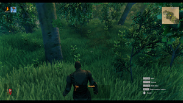
状态界面（游戏界面）是叠加在屏幕上的界面，向玩家提供有用信息。
始终显示的界面
快捷栏

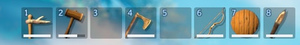
- 快捷栏是物品栏最上方一行，无需打开背包界面即可取用物品。
- 已启用物品以蓝色高亮。按数字键[1-8]可装备、卸下或使用物品。
- 工具和武器耐久以格子底部白条显示，完全耗尽时闪红。
- 可堆叠物品数量显示在格子底部。
- 最右侧物品之后的空格不显示，完全无物品时整个快捷栏隐藏。
生命值, 食物, 与 放逐之力

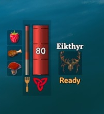
小地图

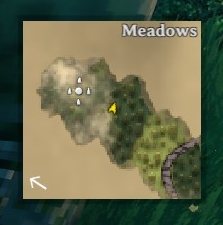
临时显示的界面
耐力栏

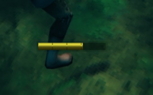
- 位于屏幕下方中央，显示当前可用耐力。
- 仅在耐力未满时显示，恢复满后片刻淡出。
埃达之能栏
血怒条
状态效果

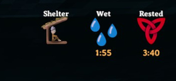
控制提示
- 位于右下角，说明当前装备物品的使用方法及其他动作。
首领 生命值栏

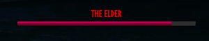
- 首领战中，处于范围内时显示首领名称和生命值。
失衡指示条

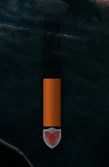
- 位于准星右侧，受到物理或闪电伤害时填充。满条表示达到踉跄上限，玩家获得失衡。
生物 状态界面

- 瞄准 生物 范围内的生物，会显示其名称、生命条和星级难度。
- 不显示生物生命值数字，只显示当前生命占上限比例。
- 敌对及被动生物血条红色，友方绿色，例如驯服动物或未激怒的矮人。
- 生命条下方的星星表示该生物为更稀有、更强大的变体。
- 多数但并非全部有星级变体，外观与普通生物不同。
- 名称上方感知标记表示对玩家的察觉程度，驯服生物也会表示对敌对生物的察觉。
| 警觉程度 | 图标 | 说明 |
|---|---|---|
| 无 | 生物尚未察觉玩家，造成的伤害会乘以武器的 背刺乘数 （通常为x3）。 | |
| 黄色 | 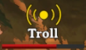 |
|
| 红色 | 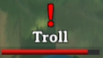 |
生物已发现玩家。敌对生物会开始攻击，温顺生物则会逃跑。 |


隐藏游戏界面
电脑线上版可按Ctrl-F3隐藏界面，用于截图等，再按相同键恢复。
| 攻略 | |
|---|---|
| 玩家 | |
| 战斗 | |
| 生成 | |
| 建材 | |
| 界面 | |
| 世界 | |
| 杂项 | |
| 开发 | |
The HUD (heads-up display) is an interface overlaid onto the screen, displaying useful information to the player.
Always displayed HUD
Hotbar
- The hotbar is the topmost row of the inventory, which allows accessing the inventory without having to open the inventory screen.
- Active items are highlighted in blue. Using a number [1-8] will equip, unequip or use the item.
- Durability for a tool or weapon is displayed as a white bar at the bottom of its slot. If the durability runs out completely, the bar flashes red.
- Item quantities for stack-able items are shown at the bottom of the slot.
- Unoccupied hotbar slots after the rightmost item are not shown, hiding the hotbar entirely if there is no item at all.
Health, food, and Forsaken Power
- Located in the lower left; the red bar shows the player's current Health.
- The three boxes on the left show the currently active food, with a timer until the food runs out.
- The icon on the right shows the current Forsaken power, and its cooldown under it.
Minimap
- The minimap shows a portion of the map centered on the player. The map is always north-oriented, with the player's camera rotation signified by the arrow rotating. Markers placed on the full size map will be visible on the minimap.
- The biome the player is in is displayed in the top right.
- The wind direction is shown by the arrow in the bottom left. Wind strength isn't indicated.
Temporarily displayed HUD
Stamina bar
- Located in the lower center of the screen; displays the current amount of Stamina the player has available.
- Only appears when Stamina isn't full, and fades away shortly after it fully replenishes.
Eitr bar
- Located under the stamina bar; displays the current amount of Eitr the player has available.
- Only appears when the player has eaten any food which grants Eitr.
Adrenaline bar
- Located under the Eitr bar; displays the current amount of Adrenaline the player has available.
- Only appears when the player is wearing a Trinket and has non-zero Adrenaline.
Status effects
- Located to the left of the minimap, displays currently active Status effects and their duration.
- Some effects are based on the immediate situation of the player (Such as Shelter, Fire, and Resting), and have no duration. Others have a cooldown, such as Rested or mead effects.
Control hints
- Located in the bottom right corner, provides information about how to use the currently equipped item, as well as other actions.
Boss health bar
- Shows the name and health of boss during a boss fight, if within range of the boss.
Stagger indicator
- Located to the right of the crosshair, this bar fills as you take physical or lightning damage. If the bar fills to the top, the stagger limit is reached and the player receives Stagger.
Creature HUD
- Aiming at a creature in range will display their name, health bar, and star difficulty.
- The numerical health of a creature is not displayed, the bar only displays how much current health the creature has out of the maximum.
- The health bar is red for hostile and passive creatures, and green for friendly creatures (such as tamed animals or unprovoked Dvergr).
- Stars shown under the health bar indicate a rare, stronger variant of a creature.
- Most, but not all, starred variants of creatures have a different appearance.
- An awareness indicator is shown above the name, displaying their current awareness in regards to the player (in the case of tamed creatures, to hostile creatures as well).
| Awareness | Icon | Description |
|---|---|---|
| None | The creature is unaware of the player. Any damage dealt is multiplied by the weapon's backstab multiplier (which is usually x3). | |
| Yellow |
| |
| Red | The creature has spotted the player, aggressive creatures will start attacking and passive creatures will flee. |
Removing the HUD
The HUD can be disabled (for taking screenshots etc.) by using the keys Ctrl-F3 (PC online). It can be restored using the same keys.
| Guides | |
|---|---|
| Player | Player • Health • Stamina • Eitr • Adrenaline • Death • Forsaken power • Skills • Status effects • Movement speed • Magic • Fishing • Riding • Sleeping • Emotes |
| Combat | |
| Spawning | |
| Building | |
| UI | |
| World | |
| Misc | |
| Development | |